Chapter 3 Exploring data #1
Download a pdf of the lecture slides covering this topic.
3.1 Data from a package
So far we’ve covered three ways to get data into R:
- From flat files (either on your computer or online)
- From files like SAS and Excel
- From R objects (i.e., using
load())
Many R packages come with their own data, which is very easy to load and use.
For example, the faraway package has a dataset called worldcup that you’ll use today. To load it, use the data() function once you’ve loaded the package:
library(faraway)
data("worldcup")Unlike most data objects you’ll work with, the data that comes with an R package will often have its own help file. You can access this using the ? operator:
?worldcupTo find out all the datasets that are available in the packages you currently have loaded, run data() without an option inside the parentheses:
data()As a note, you can similarly use library(), without the name of a package, to list all of the packages you have installed that you could call with library():
library()3.2 Plots to explore data
Plots can be invaluable in exploring your data. In this section, I will focus on teaching you the basics of ggplot2 plotting. This section will focus on making useful, rather than attractive graphs, since we are focusing on exploring rather than presenting data at this stage. In a later section, I will discuss customization of ggplot2 plots, to help you make more attractive plots that would go into final reports.
This chapter covers how to make the following types of basic plots using functions from the ggplot2 package (another member of the tidyverse!):
library(ggplot2)The basic steps behind creating a plot with ggplot2 are:
- You’ll create an object of the
ggplotclass, typically specifying the aesthetics; - You’ll add on geoms and other elements to create and customize the plot, using
+.
Note: To avoid errors, end lines with +, don’t start lines with it.
3.2.1 Initializing a ggplot object
Use the following conventions to initialize a ggplot object:
## Generic code
object <- ggplot(dataframe, aes(x = column_1, y = column_2))Notice that you first specify the dataframe with the data you want to plot and then you might specify either mappings or constant values for some or all of the aesthetics (aes).
3.2.2 Plot aesthetics
Aesthetics are elements that can show certain elements of the data.
For example, color might show gender, x-position might show height, and y-position might show weight.
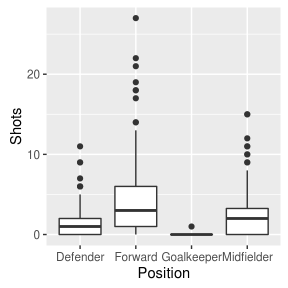
In this graph, the mapped aesthetics are color, x, and y.
Note: Any of these aesthetics could also be given a constant value, instead of being mapped to an element of the data. For example, all the points could be red, instead of showing gender.
Here are some common plot aesthetics you might want to specify:
| Code | Description |
|---|---|
x |
Position on x-axis |
y |
Position on y-axis |
shape |
Shape |
color |
Color of border of elements |
fill |
Color of inside of elements |
size |
Size |
alpha |
Transparency (1: opaque; 0: transparent) |
linetype |
Type of line (e.g., solid, dashed) |
Which aesthetics you must specify depend on which geoms (more on those in a second) you’re adding to the plot.
You can find out the aesthetics you can use for a geom in the “Aesthetics” section of the geom’s help file (e.g., ?geom_point).
Required aesthetics are in bold in this section of the help file and optional ones are not.
3.2.3 Adding geoms
Next, you’ll want to add one or more geoms to create the plot. You can add these with + after the ggplot statement to initialize the ggplot object.
Some of the most common geoms are:
| Plot type | ggplot2 function |
|---|---|
| Histogram (1 numeric variable) | geom_histogram |
| Scatterplot (2 numeric variables) | geom_point |
| Boxplot (1 numeric variable, possibly 1 factor variable) | geom_boxplot |
| Line graph (2 numeric variables) | geom_line |
3.2.4 Constant aesthetics
Instead of mapping an aesthetic to an element of your data, you can use a constant value for it. For example, you may want to make all the points green, rather than having color map to gender:

In this case, you’ll define that aesthetic when you add the geom, outside of an aes statement.
If you’re using a constant shape, you specify the shape with a number.
Here are the shapes that correspond to the numbers 1 to 25:

If you are using a constant color, R has character names for different colors. For example:
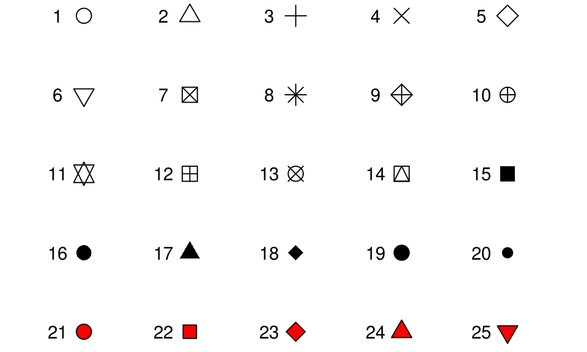
Google “R colors” and search the images to find links to listings of different R colors.
3.2.5 Useful plot additions
There are also a number of elements that you can add onto a ggplot object using +. A few very frequently used ones are:
| Element | Description |
|---|---|
ggtitle |
Plot title |
xlab, ylab |
x- and y-axis labels |
xlim, ylim |
Limits of x- and y-axis |
3.2.6 Example dataset
For the example plots, I’ll use a dataset in the faraway package called nepali. This gives data from a study of the health of a group of Nepalese children.
library(faraway)
data(nepali)I’ll be using functions from dplyr and ggplot2, so those need to be loaded:
library(dplyr)
library(ggplot2)Each observation is a single measurement for a child; there can be multiple observations per child.
I’ll subset out child id, sex, weight, height, and age, and I’ll limit to each child’s first measurement.
nepali <- nepali %>%
# Subset to certain columns
select(id, sex, wt, ht, age) %>%
# Convert id and sex to factors
mutate(id = factor(id),
sex = factor(sex, levels = c(1, 2),
labels = c("Male", "Female"))) %>%
# Limit to first obs. per child
distinct(id, .keep_all = TRUE)The data now looks like:
head(nepali)## id sex wt ht age
## 1 120011 Male 12.8 91.2 41
## 2 120012 Female 14.9 103.9 57
## 3 120021 Female 7.7 70.1 8
## 4 120022 Female 12.1 86.4 35
## 5 120023 Male 14.2 99.4 49
## 6 120031 Male 13.9 96.4 463.2.7 Histograms
For geom_histogram(), the main aesthetic is x, the (numeric) vector for which you want to create a histogram:
ggplot(nepali, aes(x = ht)) +
geom_histogram()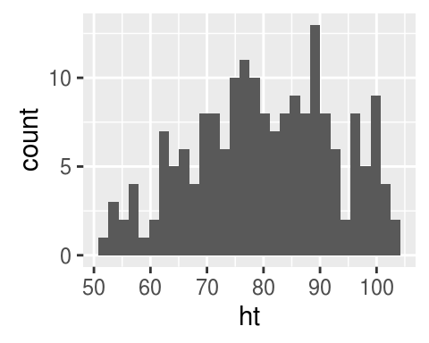
You can add some elements to the histogram, like ggtitle, xlab, and xlim:
ggplot(nepali, aes(x = ht)) +
geom_histogram(fill = "lightblue", color = "black") +
ggtitle("Height of children") +
xlab("Height (cm)") + xlim(c(0, 120))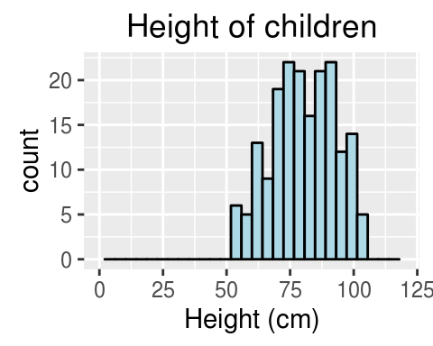
geom_histogram also has its own special argument, bins. You can use this to change the number of bins that are used to make the histogram:
ggplot(nepali, aes(x = ht)) +
geom_histogram(fill = "lightblue", color = "black",
bins = 40) 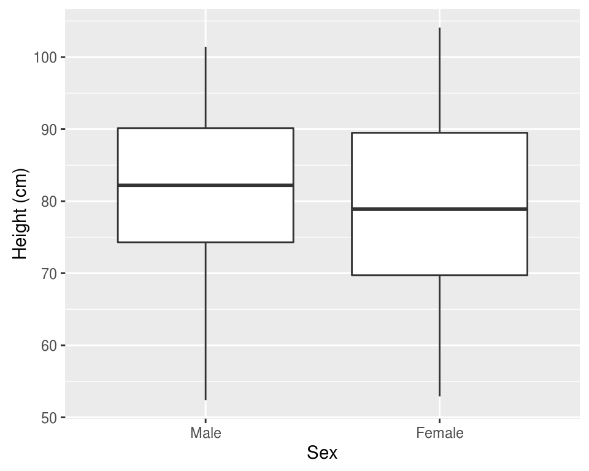
3.2.8 Scatterplots
You can use the geom_point geom to create a scatterplot. For example, to create a scatterplot of height versus age for the Nepali data:
ggplot(nepali, aes(x = ht, y = wt)) +
geom_point()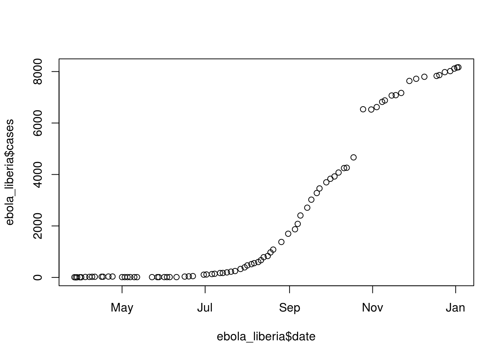
Again, you can use some of the options and additions to change the plot appearance:
ggplot(nepali, aes(x = ht, y = wt)) +
geom_point(color = "blue", size = 0.5) +
ggtitle("Weight versus Height") +
xlab("Height (cm)") + ylab("Weight (kg)")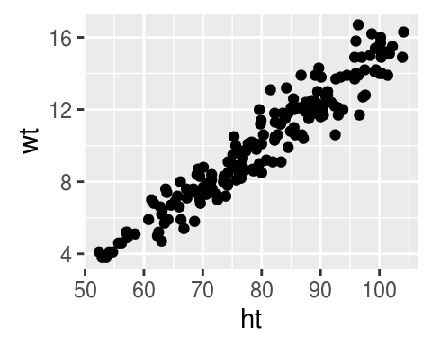
You can also try mapping another variable, sex, to the color aesthetic:
ggplot(nepali, aes(x = ht, y = wt, color = sex)) +
geom_point(size = 0.5) +
ggtitle("Weight versus Height") +
xlab("Height (cm)") + ylab("Weight (kg)")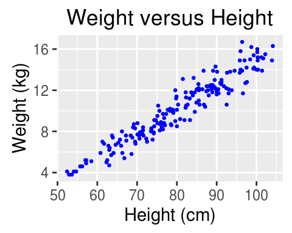
3.2.9 Boxplots
To create a boxplot, use geom_boxplot:
ggplot(nepali, aes(x = 1, y = ht)) +
geom_boxplot() +
xlab("")+ ylab("Height (cm)")
You can also create separate boxplots, one for each level of a factor. In this case, you’ll need to include two aesthetics (x and y) when you initialize the ggplot object.
ggplot(nepali, aes(x = sex, y = ht, group = sex)) +
geom_boxplot() +
xlab("Sex")+ ylab("Height (cm)") 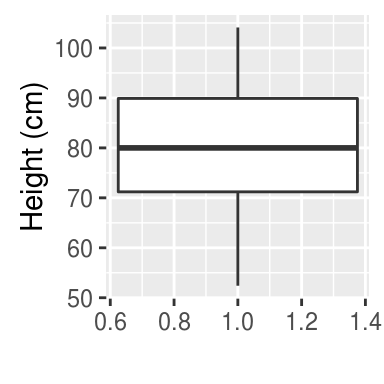
3.2.10 Extensions of ggplot2
There are lots of R extensions for creating other interesting plots.
For example, you can use the ggpairs function from the GGally package to plot all pairs of scatterplots for several variables.
Notice how this output shows continuous and binary variables differently.
The next slide shows the output for:
library(GGally)
ggpairs(nepali[, c("sex", "wt", "ht", "age")])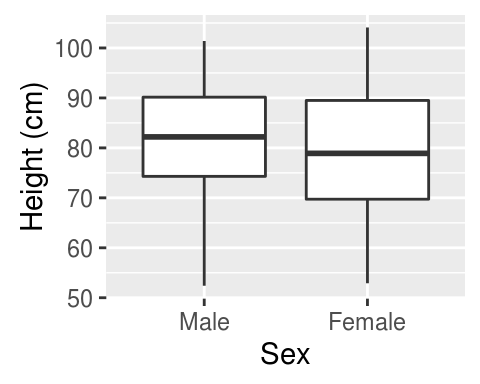
3.3 In-course exercise
3.3.1 Loading data from an R package
The data we’ll be using today is from a dataset called worldcup in the package faraway. Load that data so you can use it on your computer (note: you will need to load and install the faraway package to do this). Use the help file for the data to find out more about the dataset. Use some basic functions, like head, tail, colnames, str, and summary to check out the data a bit. See if you can figure out:
- What variables are included in this dataset? (Check the column names.)
- What class is each column currently? In particular, which are numbers and which are factors?
3.3.1.1 Example R code:
Load the faraway package using load() and then load the data using data():
## Uncomment the next line if you need to install the package
# install.packages("faraway")
library(faraway)
data("worldcup")Check out the help file for the worldcup dataset to find out more about the data. (Note: Only datasets that are parts of packages will have help files.)
?worldcupCheck out the data a bit:
str(worldcup)## 'data.frame': 595 obs. of 7 variables:
## $ Team : Factor w/ 32 levels "Algeria","Argentina",..: 1 16 9 9 5 32 11 11 18 20 ...
## $ Position: Factor w/ 4 levels "Defender","Forward",..: 4 4 1 4 2 2 1 2 4 1 ...
## $ Time : int 16 351 180 270 46 72 138 33 21 103 ...
## $ Shots : int 0 0 0 1 2 0 0 0 5 0 ...
## $ Passes : int 6 101 91 111 16 15 51 9 22 38 ...
## $ Tackles : int 0 14 6 5 0 0 2 0 0 1 ...
## $ Saves : int 0 0 0 0 0 0 0 0 0 0 ...head(worldcup)## Team Position Time Shots Passes Tackles Saves
## Abdoun Algeria Midfielder 16 0 6 0 0
## Abe Japan Midfielder 351 0 101 14 0
## Abidal France Defender 180 0 91 6 0
## Abou Diaby France Midfielder 270 1 111 5 0
## Aboubakar Cameroon Forward 46 2 16 0 0
## Abreu Uruguay Forward 72 0 15 0 0tail(worldcup)## Team Position Time Shots Passes Tackles Saves
## van Bommel Netherlands Midfielder 540 2 307 31 0
## van Bronckhorst Netherlands Defender 540 1 271 10 0
## van Persie Netherlands Forward 479 14 108 1 0
## von Bergen Switzerland Defender 234 0 79 3 0
## Alvaro Pereira Uruguay Midfielder 409 6 140 17 0
## Ozil Germany Midfielder 497 7 266 3 0colnames(worldcup)## [1] "Team" "Position" "Time" "Shots" "Passes" "Tackles"
## [7] "Saves"summary(worldcup)## Team Position Time Shots
## Slovakia : 21 Defender :188 Min. : 1.0 Min. : 0.000
## Uruguay : 21 Forward :143 1st Qu.: 88.0 1st Qu.: 0.000
## Argentina: 20 Goalkeeper: 36 Median :191.0 Median : 1.000
## Cameroon : 20 Midfielder:228 Mean :208.9 Mean : 2.304
## Chile : 20 3rd Qu.:270.0 3rd Qu.: 3.000
## Paraguay : 20 Max. :570.0 Max. :27.000
## (Other) :473
## Passes Tackles Saves
## Min. : 0.00 Min. : 0.000 Min. : 0.0000
## 1st Qu.: 29.00 1st Qu.: 1.000 1st Qu.: 0.0000
## Median : 61.00 Median : 3.000 Median : 0.0000
## Mean : 84.52 Mean : 4.192 Mean : 0.6672
## 3rd Qu.:115.50 3rd Qu.: 6.000 3rd Qu.: 0.0000
## Max. :563.00 Max. :34.000 Max. :20.0000
## 3.3.2 Basic plots of the data
Use some basic plots to check out this data. Try the following:
- Plot histograms of all the numeric variables (
Time,Shot,Passes,Tackles,Saves) - Plot scatterplots of different combinations of numeric variables (e.g.,
Timevs.Shots). Try doing this using thegeom_point()geom fromggplot2. Also try doing it using theggpairs()function from theGGallypackage, to plot several of these at the same time. Try using different constant or mapped values with thecoloraesthetic. - Create boxplots of
Time,Shots,PassesandSavesby position. - Go online and find out which teams were the top four teams in this World Cup (i.e., first through fourth places). Create a
top_teamssubset with just these teams. Plot boxplots ofShotsandSavesby team for just these teams. - Did you notice any interesting features of the data when you did any of the graphs in this section?
3.3.2.1 Example R code:
Use histograms to explore the distribution of different variables. If you want to change the number of bins in the histogram, try playing around with the bins and binwidth arguments. You can use the bins argument to say how many bins you want (e.g., bins = 50). You can use the binwidth argument to say how wide you want the bins to be (e.g., binwidth = 10 if you wanted bins to be 10 units wide, in the units of the variable mapped to the x aesthetic. Try using fill and color to change the appearance of the plot. Google “R colors” and search the images to find links to listings of different R colors.
library(ggplot2)
ggplot(worldcup, aes(x = Time)) +
geom_histogram()
ggplot(worldcup, aes(x = Time)) +
geom_histogram(bins = 50)
ggplot(worldcup, aes(x = Time)) +
geom_histogram(binwidth = 100)
ggplot(worldcup, aes(x = Time)) +
geom_histogram(binwidth = 50, color = "white", fill = "cyan4")
Create a scatterplot of Time versus Passes. To change the size of the points, use the size argument (use a number lower than 1 for smaller points, higher than 1 for larger points). Try changing the color and transparency of the points using the aesthetics color and alpha. Try using color to show each player’s position by mapping Position to the color aesthetic.
ggplot(worldcup, aes(x = Time, y = Passes)) +
geom_point()
ggplot(worldcup, aes(x = Time, y = Passes)) +
geom_point(size = 0.5)
ggplot(worldcup, aes(x = Time, y = Passes)) +
geom_point(size = 2, color = "blue", alpha = 0.25)
ggplot(worldcup, aes(x = Time, y = Passes, color = Position)) +
geom_point()
Use the ggpairs function from the GGally package to plot scatterplots of all combinations of several numeric variables.
library(GGally)
library(dplyr)
ggpairs(select(worldcup, Time, Shots, Passes, Tackles, Saves))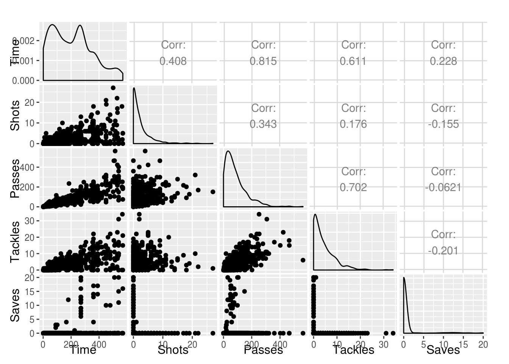
To create a boxplot of Shots by Position, you can use geom_boxplot:
ggplot(worldcup, aes(x = Position, y = Shots)) +
geom_boxplot()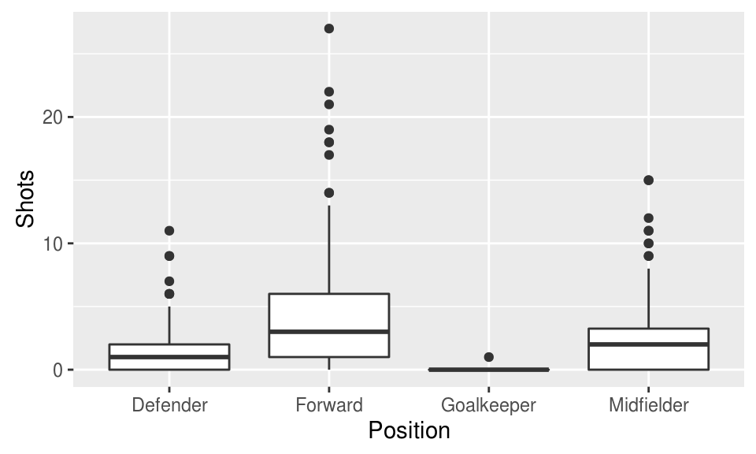
The top four teams in this World Cup were Spain, the Netherlands, Germany, and Uruguay. Create a subset with just the data for these four teams:
top_teams <- worldcup %>%
filter(Team %in% c("Spain", "Netherlands", "Germany", "Uruguay")) %>%
mutate(Team = factor(Team))This dataset will still have all the levels saved for the Team factor, even though it isn’t using them all. You can re-set this by resetting Team as a factor, which is what I’ve done with the mutate line. When R creates a factor from a vector, its default is to only use as levels the values that show up in the vector.
Now, you can plot the boxplots, mapping Team to the x aesthetic and Shots or Saves to the y aesthetic:
ggplot(top_teams, aes(x = Team, y = Shots)) +
geom_boxplot() +
ggtitle("Shots")
ggplot(top_teams, aes(x = Team, y = Saves)) +
geom_boxplot() +
ggtitle("Saves")
3.3.2.2 If you have extra time:
If you wanted to do the same plot for several different variables, you could loop through your code (we’ll be covering more about loops in a few weeks). For example, you could create histograms for all of the numeric variables (if you do this in RStudio, you’ll need to use the arrows on the plot window to move through and see all the different plots once you’ve created them):
## Create an object with the column names for all of the numeric variables
my_vars <- colnames(worldcup)[3:7]
## Loop through all of those variables. Print out a histogram with the
## variable, and have it print on the plot, as the main title, the
## column name for that variable
for(var in my_vars){
worldcup$to_plot <- worldcup[ , var]
a <- ggplot(worldcup, aes(x = to_plot)) +
geom_histogram(bins = 20, color = "white", fill = "navy") +
xlab(var) +
ggtitle(paste("Histogram of", var))
plot(a)
}


A few things to note in this example:
- To map an element of the data to an aesthetic, it’s easiest if that element is saved in a column in the dataframe. Within this loop, I’m making an extra column called
to_plot, where I’m copying the column of the variable I want to plot each time the loop runs. That way, I can always usex = to_plotin the aesthetic mapping for the ggplot object. - If you run code to create a ggplot object within a loop, it won’t automatically print. Instead, you need to use
printto get the object to print out. One way to do that is to save the final ggplot object as an R object (here I’m saving it toa) and then use theprintfunction to print that object. - Next week, we’ll talk some about faceting, which can create multiple plots by variable like this in a lot less code. However, it’s useful at this point to start thinking about how to extend code to use in loops, to save yourself time when you need to repeat something similar many times.
3.3.3 Exploring the data using simple statistics and logical statements
Next, try checking out the data using some basic commands for simple statistics, like mean(), range(), max(), and min(). Use these, along with some logical statements, to help you answer the following questions:
- What is the range of time that players spent in the game? Who played the most World Cup time in this World Cup? For the minimum of the range of
Time, how many players played this amount of time? - What is the mean number of saves that players made? What is the mean number of saves just among the goalkeepers? How many of the players are goalkeepers? Did any non-goalkeeper make a save?
3.3.3.1 Example R code:
Use range() to find out the range of time these players played in the World Cup.
range(worldcup$Time)## [1] 1 570To figure out who played the most time, you need to subset out the rows of the dataset where the Time variable equals the maximum of the Time variable for the whole dataset. There are a few ways to do that. Here I’m showing two: (1) using logic within the “square-bracket indexing”, to pull out just rows where it is TRUE that the Time for that row equals max(worldcup$Time) and (2) using filter from the dplyr package to filter down to rows where where it is TRUE that the Time for that row equals max(Time) for the whole dataset.
max(worldcup$Time)## [1] 570head(worldcup$Time == max(worldcup$Time))## [1] FALSE FALSE FALSE FALSE FALSE FALSEworldcup[worldcup$Time == max(worldcup$Time), ]## Team Position Time Shots Passes Tackles Saves to_plot
## Arevalo Rios Uruguay Midfielder 570 5 195 21 0 0
## Maxi Pereira Uruguay Midfielder 570 5 182 15 0 0
## Muslera Uruguay Goalkeeper 570 0 75 0 16 16worldcup %>%
filter(Time == max(Time))## Team Position Time Shots Passes Tackles Saves to_plot
## 1 Uruguay Midfielder 570 5 195 21 0 0
## 2 Uruguay Midfielder 570 5 182 15 0 0
## 3 Uruguay Goalkeeper 570 0 75 0 16 16Note: You may have noticed that you lost the players names when you did this using the dplyr pipechain. That’s because dplyr functions convert the data to a dataframe format that does not include rownames. If you want to keep players’ names, use mutate to move those names from the rownames of the data into a column in the dataframe:
worldcup %>%
mutate(Name = rownames(worldcup)) %>%
filter(Time == max(Time))## Team Position Time Shots Passes Tackles Saves to_plot Name
## 1 Uruguay Midfielder 570 5 195 21 0 0 Arevalo Rios
## 2 Uruguay Midfielder 570 5 182 15 0 0 Maxi Pereira
## 3 Uruguay Goalkeeper 570 0 75 0 16 16 MusleraTo calculate the mean number of saves among all the players, use the mean function, either by itself or within a summarize call:
mean(worldcup$Saves)## [1] 0.6672269worldcup %>%
summarize(mean_saves = mean(Saves))## mean_saves
## 1 0.6672269For the next parts of the question, it will be convenient to have a logical vector for whether each player is a goalkeeper, so here’s how you would create that:
goalie <- worldcup$Position == "Goalkeeper"This new object, goalie, is a vector the same length as worldcup$Position. Each element of goalie says whether it is TRUE or FALSE that worldcup$Position is equal to “Goalkeeper” at that spot on the worldcup$Position vector.
head(goalie)## [1] FALSE FALSE FALSE FALSE FALSE FALSEThe summary() function will count up the total number of times that goalie is TRUE and FALSE.
summary(goalie)## Mode FALSE TRUE NA's
## logical 559 36 0There are a few ways to use this vector to figure out how many players were goalkeepers. First, you could use summary (which I just showed) or table, and just read how many times this vector has the value TRUE. Second, since R saves logical vectors with TRUE as 1 and FALSE as 0, you could just the sum function to add up the vector to find out how often it’s TRUE (sum adds up every value in the vector).
table(goalie)## goalie
## FALSE TRUE
## 559 36sum(goalie)## [1] 36You could also answer this question by using summarize from dplyr. You need to group_by player position and then you can use the n function in summarize to count up the total number of observations in each group:
worldcup %>%
group_by(Position) %>%
summarize(n_players = n())## # A tibble: 4 × 2
## Position n_players
## <fctr> <int>
## 1 Defender 188
## 2 Forward 143
## 3 Goalkeeper 36
## 4 Midfielder 228Now, you can answer the questions about mean saves for goalies and max saves for non-goalies. First, try doing that using the goalie logical vector you created. If you put goalie in the square bracket indexing for the dataframe as the rows value (i.e., the index before the comma), R will subset out just the rows where goalie is equal to TRUE. If you put !goalie in the square bracket indexing as the rows value, R will just subset out the rows where goalie is equal to FALSE. You can use this index subsetting to figure out the mean number of saves per goalie and also whether any non-goalie made a save (by checking the maximum value or range of saves for non-goalies).
head(worldcup[goalie, ])## Team Position Time Shots Passes Tackles Saves to_plot
## Barry Ivory Coast Goalkeeper 270 0 23 0 8 8
## Benaglio Switzerland Goalkeeper 270 0 75 0 11 11
## Bravo Chile Goalkeeper 360 0 58 0 4 4
## Buffon Italy Goalkeeper 45 0 4 0 0 0
## Casillas Spain Goalkeeper 540 0 67 0 11 11
## Chaouchi Algeria Goalkeeper 90 0 17 0 2 2mean(worldcup[goalie, "Saves"])## [1] 11.02778range(worldcup[!goalie, "Saves"])## [1] 0 0You could also answer this quesiton using a dplyr pipe chain to summarize the data after grouping it by position:
worldcup %>%
group_by(Position) %>%
summarize(number_players = n(),
mean_saves = mean(Saves),
max_saves = max(Saves))## # A tibble: 4 × 4
## Position number_players mean_saves max_saves
## <fctr> <int> <dbl> <int>
## 1 Defender 188 0.00000 0
## 2 Forward 143 0.00000 0
## 3 Goalkeeper 36 11.02778 20
## 4 Midfielder 228 0.00000 03.3.4 Using regression models to explore data
For this part of the exercise, you’ll use a dataset on weather, air pollution, and mortality counts in Chicago, IL. This dataset is called chicagoNMMAPS and is part of the dlnm package. Change the name of the dataframe to something shorter, like chic. Check out the data a bit to see what variables you have, and then perform the following tasks:
- Write out (on paper, not in R) the regression equation for regressing dewpoint temperature on temperature.
- Try fitting a linear regression of dew point temperature (
dptp) on temperature (temp). (Bonus points: Notice anything that seems unusual about these two variables in this dataset? You can find out withsummary, but it helps if you know a bit about what dewpoint temperature measures.) Save this model as the objectmod_1. - Based on this regression, does there seem to be a relationship between temperature and dewpoint temperature in Chicago? (Hint: Try using
summary()on the model object to get more information about the model you fit.) What is the p-value for the coefficient for temperature? - Plot temperature (x-axis) versus dewpoint temperature (y-axis) for Chicago. Add in the regression line from the model you fit.
- Use
plot()on the model object to check if some of the assumptions for the regression model seem appropriate. - Try fitting the regression as a GLM, using
glm(). Are your coefficients different? - Does PM10 vary by day of the week? (Hint: The
dowvariable is a factor that gives day of the week. You can do an ANOVA analysis by fitting a linear model using this variable as the independent variable, and then runanova()on that model, and R will compare it to an intercept-only model.) What day of the week is PM10 generally highest? (Check the model coefficients to figure this out.) Try to write out (on paper) the regression equation for the model you’re fitting. - Try using
glm()to run a Poisson regression of respiratory deaths (resp) on temperature during summer days. Start by creating a subset with just summer days calledsummer. (Hint: Use themonthvariable to do this– just pull out the subset where the month is 6, 7, or 8, for June, July, and August.) Try to write out the regression equation for the model you’re fitting. - The coefficient for the temperature variable in this model is our best estimate (based on this model) of the log relative risk for a one degree Celcius increase in temperature. What is the relative risk associated with a one degree Celsius increase?
3.3.4.1 Example R code:
Install and load the dlnm package and then load the chicagoNMMAPS data. Change the name of the dataframe to chic, so it will be shorter to call for the rest of your work.
# install.packages("dlnm")
library(dlnm)
data("chicagoNMMAPS")
chic <- chicagoNMMAPSFit a linear regression of dptp on temp and save as the object mod_1:
mod_1 <- lm(dptp ~ temp, data = chic)
mod_1##
## Call:
## lm(formula = dptp ~ temp, data = chic)
##
## Coefficients:
## (Intercept) temp
## 24.025 1.621Use summary() to check out a bit more about the model you fit.
summary(mod_1)##
## Call:
## lm(formula = dptp ~ temp, data = chic)
##
## Residuals:
## Min 1Q Median 3Q Max
## -24.3093 -3.7470 0.4687 4.0738 18.6518
##
## Coefficients:
## Estimate Std. Error t value Pr(>|t|)
## (Intercept) 24.024869 0.112933 212.7 <2e-16 ***
## temp 1.620650 0.007631 212.4 <2e-16 ***
## ---
## Signif. codes: 0 '***' 0.001 '**' 0.01 '*' 0.05 '.' 0.1 ' ' 1
##
## Residual standard error: 5.899 on 5112 degrees of freedom
## Multiple R-squared: 0.8982, Adjusted R-squared: 0.8982
## F-statistic: 4.511e+04 on 1 and 5112 DF, p-value: < 2.2e-16There does seem to be an association between temperature and dewpoint temperature: a unit increase in temperature is associated with a 1.6 unit increase in dewpoint temperature. The p-value for the temperature coefficient is <2e-16. This is far below 0.05, which suggests we would be very unlikely to see such a strong association by chance if the null hypothesis, that the two variables are not associated, were true.
Plot these two variables and add in the regression line from the model (note: I’ve used the col = option to make the color of the points gray). Use abline() to add the regression line for the model you fit.
ggplot(chic, aes(x = temp, y = dptp)) +
geom_point(size = 0.5, col = "gray") +
geom_smooth(method = "lm", color = "black")
mod_coefs <- coef(mod_1)
ggplot(chic, aes(x = temp, y = dptp)) +
geom_point(size = 0.5, col = "gray") +
geom_abline(aes(intercept = mod_coefs[1], slope = mod_coefs[2]))
Plot some various plots to check model assumptions for the model you fit using the plot() function on your model object:
par(mfrow = c(2, 2)) # Set to four plots per panel -- 2 rows, 2 columns
plot(mod_1)
par(mfrow = c(1, 1)) # Reset to one plot per panelTry fitting the model using glm(). Call it mod_1a. Compare the coefficients for the two models. You can use the coef() function on an lm or glm object to pull out just the model coefficients.
mod_1a <- glm(dptp ~ temp, data = chic)
coef(mod_1)## (Intercept) temp
## 24.02487 1.62065coef(mod_1a)## (Intercept) temp
## 24.02487 1.62065The results from the two models are identical.
Fit a model of PM10 regressed on day of week, where day of week is a factor.
mod_2 <- lm(pm10 ~ dow, data = chic)
summary(mod_2)##
## Call:
## lm(formula = pm10 ~ dow, data = chic)
##
## Residuals:
## Min 1Q Median 3Q Max
## -39.05 -12.55 -3.34 8.80 328.66
##
## Coefficients:
## Estimate Std. Error t value Pr(>|t|)
## (Intercept) 27.5217 0.7303 37.684 < 2e-16 ***
## dowMonday 6.1322 1.0340 5.931 3.22e-09 ***
## dowTuesday 6.7954 1.0269 6.617 4.05e-11 ***
## dowWednesday 8.4768 1.0262 8.261 < 2e-16 ***
## dowThursday 8.8047 1.0240 8.598 < 2e-16 ***
## dowFriday 9.4816 1.0262 9.240 < 2e-16 ***
## dowSaturday 3.6602 1.0269 3.564 0.000368 ***
## ---
## Signif. codes: 0 '***' 0.001 '**' 0.01 '*' 0.05 '.' 0.1 ' ' 1
##
## Residual standard error: 19.07 on 4856 degrees of freedom
## (251 observations deleted due to missingness)
## Multiple R-squared: 0.02588, Adjusted R-squared: 0.02467
## F-statistic: 21.5 on 6 and 4856 DF, p-value: < 2.2e-16Use the anova() command to compare this model to a model with only an intercept (i.e., one that only fits a global mean and uses that as the expected value for all of the observations).
anova(mod_2)## Analysis of Variance Table
##
## Response: pm10
## Df Sum Sq Mean Sq F value Pr(>F)
## dow 6 46924 7820.6 21.5 < 2.2e-16 ***
## Residuals 4856 1766407 363.8
## ---
## Signif. codes: 0 '***' 0.001 '**' 0.01 '*' 0.05 '.' 0.1 ' ' 1The p-value for an ANOVA of the model with day-of-week coefficients versus the model that just has an intercept is < 2.2e-16. This is well below 0.05, which suggests that day-of-week is associated with PM10 concentration, as a model that includes day-of-week does a much better job of explaining variation in PM10 than a model without it does. (Note, too, that the F value and Pr(>F) for the anova() call are identical to the F-statistic information given in the summary() of the model object. This will always be true when you’re using anova() to compare a model to a model with just an intercept.)
Use a boxplot to visually compare PM10 by day of week.
ggplot(chic, aes(x = dow, y = pm10)) +
geom_boxplot()## Warning: Removed 251 rows containing non-finite values (stat_boxplot).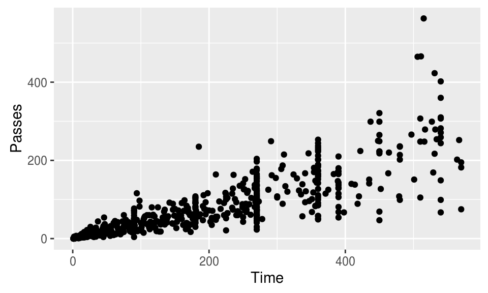
Now try the same plot, but try using the ylim = option to change the limits on the y-axis for the graph, so you can get a better idea of the pattern by day of week (some of the extreme values are very high, which makes it hard to compare by eye when the y-axis extends to include them all).
ggplot(chic, aes(x = dow, y = pm10)) +
geom_boxplot() +
ylim(c(0, 100))## Warning: Removed 292 rows containing non-finite values (stat_boxplot).
Create a subset called summer with just the summer days:
summer <- chic %>%
filter(month %in% 6:8)Use glm() to fit a Poisson model of respiratory deaths regressed on temperature. Since you want to fit a Poisson model, use the option family = poisson(link = "log").
mod_3 <- glm(resp ~ temp, data = summer,
family = poisson(link = "log"))
summary(mod_3)##
## Call:
## glm(formula = resp ~ temp, family = poisson(link = "log"), data = summer)
##
## Deviance Residuals:
## Min 1Q Median 3Q Max
## -3.9755 -0.7162 -0.1807 0.6927 3.6555
##
## Coefficients:
## Estimate Std. Error z value Pr(>|z|)
## (Intercept) 1.910317 0.058373 32.726 <2e-16 ***
## temp 0.006137 0.002581 2.378 0.0174 *
## ---
## Signif. codes: 0 '***' 0.001 '**' 0.01 '*' 0.05 '.' 0.1 ' ' 1
##
## (Dispersion parameter for poisson family taken to be 1)
##
## Null deviance: 1499.4 on 1287 degrees of freedom
## Residual deviance: 1493.8 on 1286 degrees of freedom
## AIC: 6425.4
##
## Number of Fisher Scoring iterations: 4Use the fitted model coefficient to determine the relative risk for a one degree Celcius increase in temperature. First, remember that you can use the coef() function to read out the model coefficients. The second of these is the value for the temperature coefficient. That means that you can use indexing ([2]) to get just that value. That’s the log relative risk; take the exponent to get the relative risk.
coef(mod_3)## (Intercept) temp
## 1.910316958 0.006136743coef(mod_3)[2]## temp
## 0.006136743exp(coef(mod_3)[2])## temp
## 1.006156